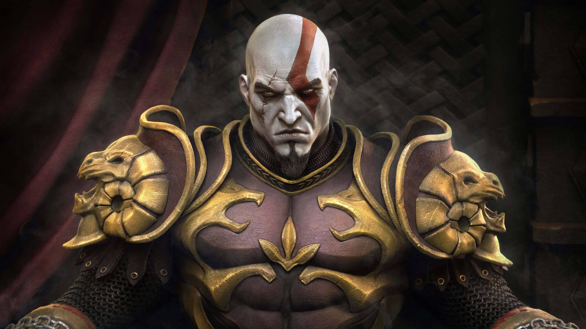

Introducción
La saga God of War es una serie de videojuegos de acción y aventura creada por Santa Monica Studio y publicada por Sony Interactive Entertainment. Sigue la historia de Kratos, un guerrero espartano marcado por la tragedia, mientras enfrenta dioses y criaturas mitológicas. La serie combina combates intensos, resolución de acertijos y narrativa épica. Originalmente centrada en la mitología griega, la saga evoluciona hacia la mitología nórdica en sus entregas más recientes. Su éxito se debe a su acción cinematográfica, personajes profundos y un mundo rico en leyendas.

Inicios
La saga God of War inicia con Kratos, un guerrero espartano que sirve a los dioses griegos mientras busca redimirse de su pasado violento. En sus primeros juegos, la historia se centra en su enfrentamiento con los dioses del Olimpo y monstruos mitológicos. Desde sus inicios, la serie se destacó por su combate intenso y sus escenas cinematográficas. Con el tiempo, la narrativa evoluciona y lo lleva hacia nuevas mitologías, como la nórdica. Así, desde sus comienzos, **God of War** combina acción, mitología y una historia personal profunda.
Curiosidades
- Kratos originalmente tenía el cabello largo en los primeros conceptos antes de adoptar su icónica cabeza rapada.
- El nombre “God of War” surgió para reflejar la historia épica de venganza y enfrentamiento con los dioses.
- En la mitología griega del juego, Kratos mata a Ares en el primer título para convertirse él mismo en el nuevo dios de la guerra.
- El actor de voz original de Kratos en inglés, Terrence C. Carson, interpretó al personaje durante varias entregas antes del reinicio nórdico.
- El juego nórdico de 2018 cambió a un estilo de cámara sobre el hombro, dejando atrás la cámara fija característica de los primeros juegos.
- El Leviatán, el hacha de Kratos en la saga nórdica, tiene la habilidad de congelar enemigos y puede ser lanzada y recuperada como boomerang.
- Los desarrolladores visitaron museos de mitología y leyeron textos antiguos para representar con precisión los dioses y criaturas.
- Kratos no solo lucha contra dioses, sino que también enfrenta monstruos como minotauros, cíclopes y dragones.
- La saga tiene varios cameos y referencias a otros juegos de Sony, como Ape Escape y Dante’s Inferno.
- El desarrollo del primer juego tardó más de tres años, y originalmente estaba planeado para ser exclusivo de la primera PlayStation 2.
¿Cuántos juegos tiene?
La saga cuenta con varios títulos importantes:
- God of War (2005)
- God of War II (2007)
- God of War: Chains of Olympus (2008)
- God of War III (2010)
- God of War: Ghost of Sparta (2010)
- God of War: Ascension (2013)
- God of War (2018)
- God of War Ragnarök (2022)
¿Dónde se juega más?
América
- Estados Unidos
- Brasil
- México
Europa
- España
- Alemania
- Reino Unido
Asia
- Japón
- China
- Corea del Sur
Dioses y Enemigos Principales
| Personaje | Mitología | Rol | Poder principal | Juego donde aparece |
|---|---|---|---|---|
| Kratos | Griega / Nórdica | Semidiós | Fuerza y combate brutal | Todos los juegos |
| Zeus | Griega | Dios | Rayos y control del cielo | God of War III |
| Ares | Griega | Dios | Guerra y destrucción | God of War (2005) |
| Baldur | Nórdica | Dios | Invulnerabilidad | God of War (2018) |
| Thor | Nórdica | Dios | Trueno y martillo Mjolnir | God of War Ragnarök |